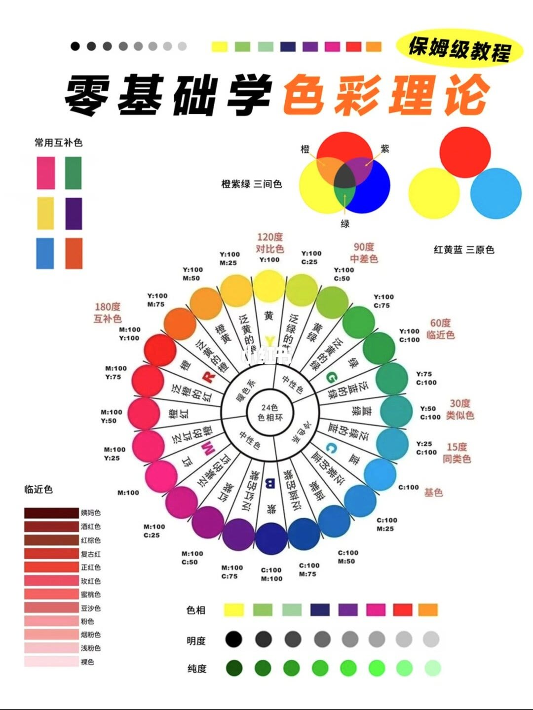
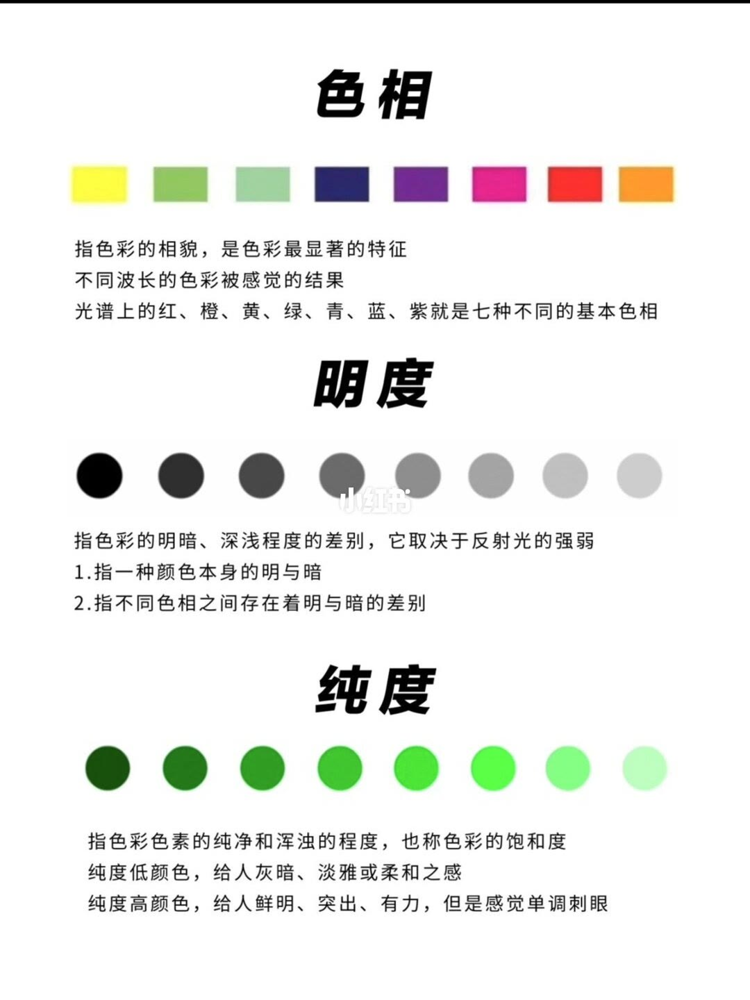
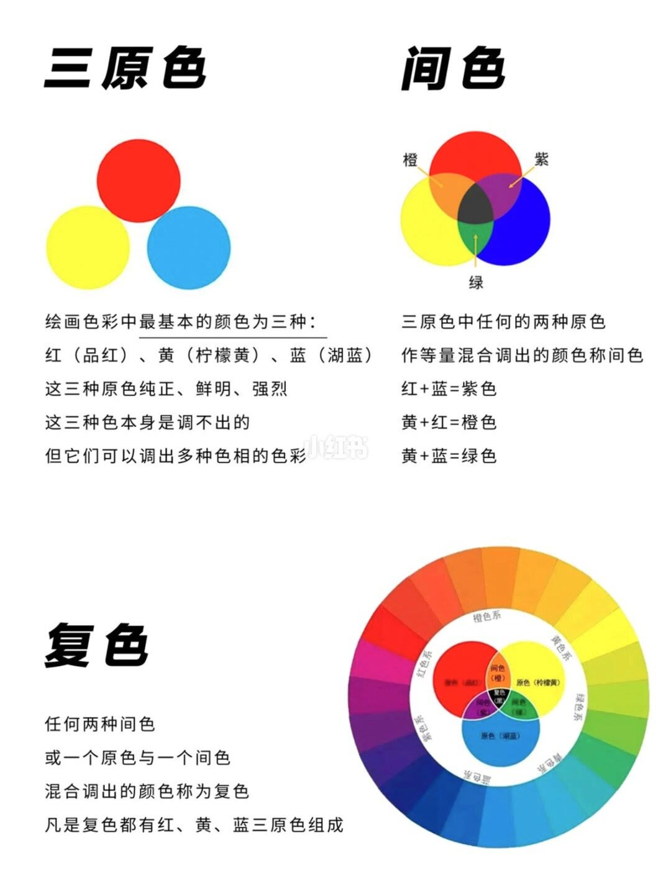
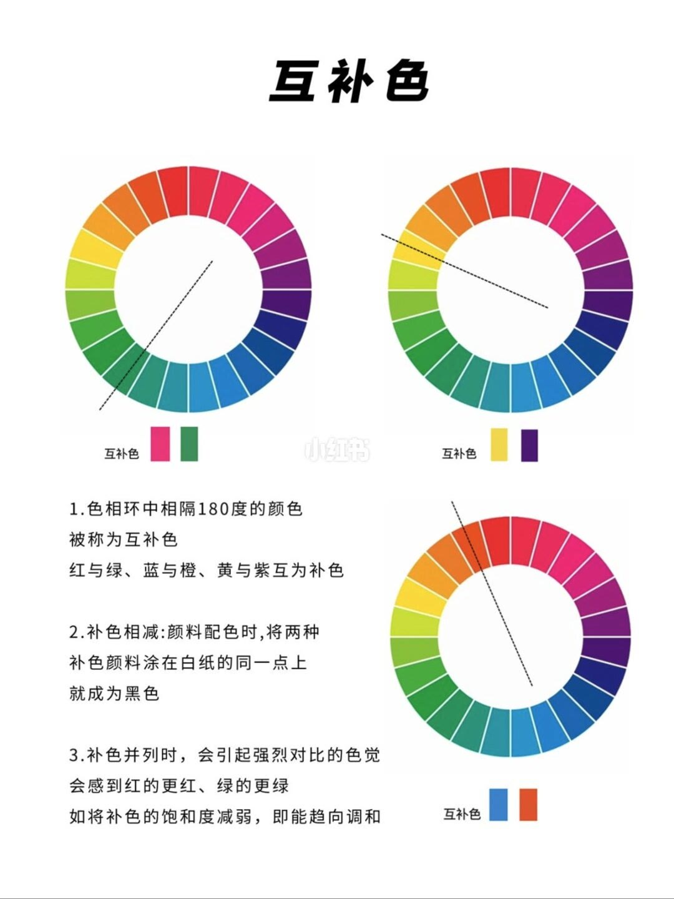
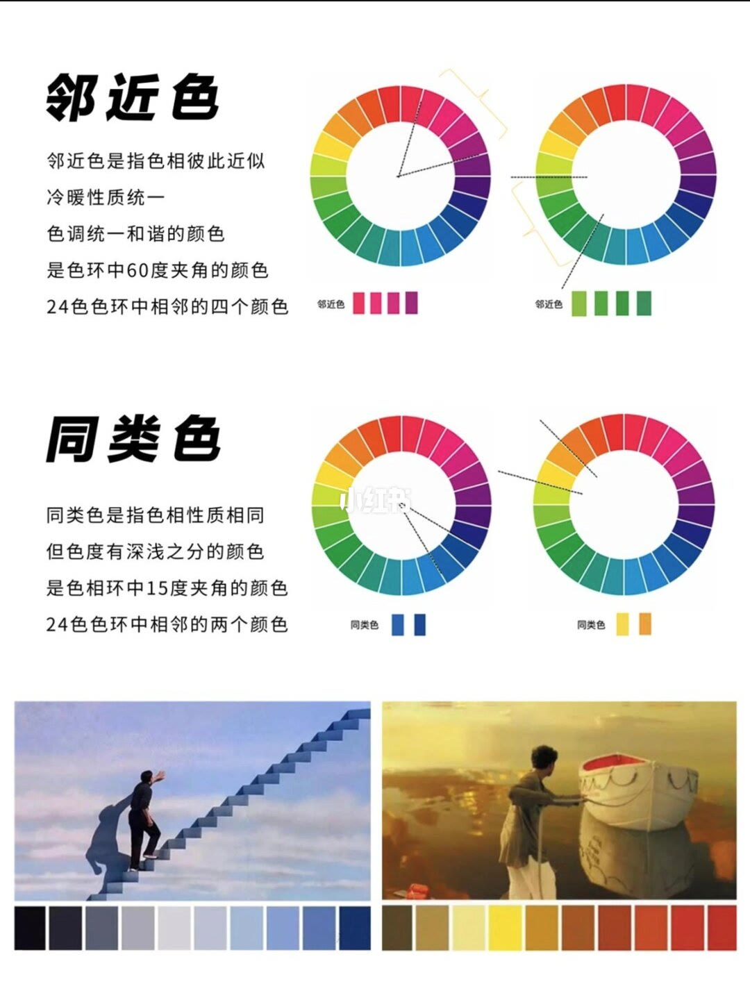
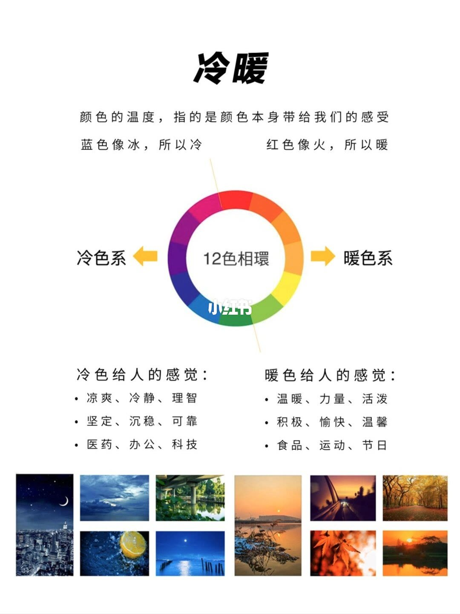
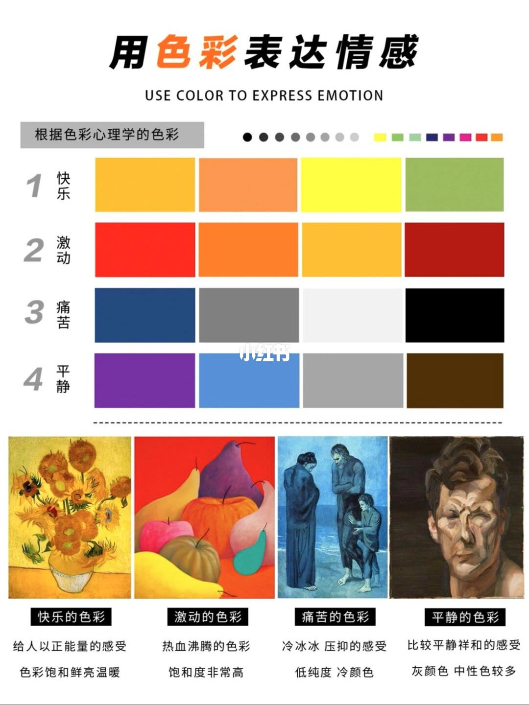
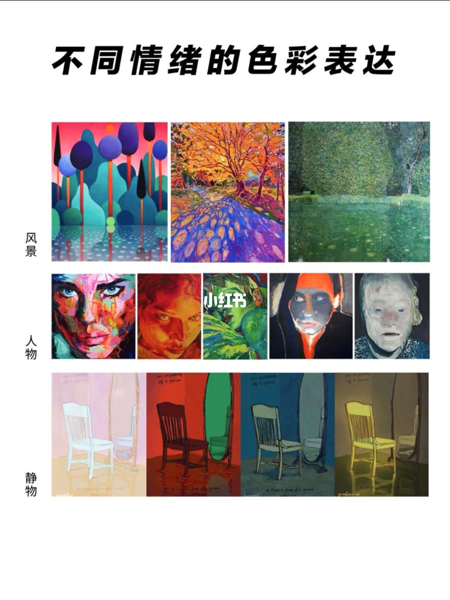

图文实录 · 小红书 · 宋宋老师教画画
色彩理论知识干货
这组手绘笔记把少儿绘画要用的色彩基础收成八页：先认三要素和三原色，再用色环上的角度区分互补、对比、邻近和同类，最后用冷暖和情绪例说明颜色怎么说话。色环格子上的印刷比例太密，实录不逐格抄成色号。
1/8
24 色色相环，按角度分六档关系
页眉是「保姆级教程」和「零基础学色彩理论」。中间是一张 24 色色相环。环外按夹角标了六档：180 度互补色，120 度对比色，90 度中差色，60 度临近色，30 度类似色，15 度同类色。右上是红黄蓝三原色，以及橙紫绿三间色。左上标题是「常用互补色」，三对色块的具体色名这页没有写成句子，无法逐对确认。环上各格标有印刷四色比例，能读出的碎片包括 Y:100、M:25、C:25、M:50、C:50、M:75、C:75、M:100、C:100、Y:75、Y:50、Y:25、G:100，但哪一格对哪一个数，图太密，不逐格认定。
环上能读出的色名有泛黄的橙、泛橙的红、泛红的橙、泛紫的红、红紫。左下另一块也叫「临近色」，十二个色名是姨妈色、酒红色、红棕色、复古红、正红色、玫红色、蜜桃色、豆沙色、粉色、烟粉色、浅粉色、裸色。页底用三排色块演示色相、明度和纯度，没有配解释句。

2/8
色相、明度、纯度各管一件事
色相：「指色彩的相貌，是色彩最显著的特征」「不同波长的色彩被感觉的结果」「光谱上的红、橙、黄、绿、青、蓝、紫就是七种不同的基本色相」。旁边是一排不同颜色的方块。
明度：「指色彩的明暗、深浅程度的差别，它取决于反射光的强弱」。两条补充：「1.指一种颜色本身的明与暗」「2.指不同色相之间存在着明与暗的差别」。旁边是一排从黑到近白的圆。
纯度：「指色彩色素的纯净和浑浊的程度，也称色彩的饱和度」。「纯度低颜色，给人灰暗、淡雅或柔和之感」。「纯度高颜色，给人鲜明、突出、有力，但是感觉单调刺眼」。旁边是一排绿色圆，从浊到鲜再到很淡，没有色号。

3/8
三原色调不出，间色和复色都从它们来
三原色：「绘画色彩中最基本的颜色为三种：红（品红）、黄（柠檬黄）、蓝（湖蓝）」「这三种原色纯正、鲜明、强烈」「这三种色本身是调不出的」「但它们可以调出多种色相的色彩」。图是红、黄、蓝三圆。
间色：「三原色中任何的两种原色作等量混合调出的颜色称间色」。算式是「红＋蓝=紫色」「黄＋红=橙色」「黄＋蓝=绿色」。
复色：「任何两种间色或一个原色与一个间色混合调出的颜色称为复色」「凡是复色都有红、黄、蓝三原色组成」。旁边还有一圈分系的色环，能读出的系名包括橙色系、红色系、绿色系；其余系名笔画不清，无法确认。三圆交会处是深色，是否写成「黑」无法确认。间色图里有一处原色标注，文字识别读成「翠蔬」，与正文「蓝（湖蓝）」对不上，该处色名无法确认。

4/8
互补色：叠在一点趋黑，并排放更跳
标题「互补色」。三个 24 色环用虚线穿过圆心，分别连起一组对面色，下面各有一对色块，都标着「互补色」。具体是哪三对，正文写的是「红与绿、蓝与橙、黄与紫互为补色」。
三条：「1.色相环中相隔180度的颜色被称为互补色」。「2.补色相减：颜料配色时，将两种补色颜料涂在白纸的同一点上就成为黑色」。「3.补色并列时，会引起强烈对比的色觉。会感到红的更红、绿的更绿。如将补色的饱和度减弱，即能趋向调和」。

5/8
邻近色占 60 度四格，同类色占 15 度两格
邻近色：「邻近色是指色相彼此近似」「冷暖性质统一」「色调统一和谐的颜色」「是色环中60度夹角的颜色」「24色色环中相邻的四个颜色」。两个色环各圈出一段 60 度，下面各有四块色。色名没有写成字。
同类色：「同类色是指色相性质相同」「但色度有深浅之分的颜色」「是色相环中15度夹角的颜色」「24色色环中相邻的两个颜色」。两个色环各圈出更窄的一段，下面各有两块色。
页底两张电影画面，各跟一条色带。画面里没有片名，无法确认是哪两部。左条以蓝为主，右条以黄、橙、红为主。

6/8
冷暖是感受：蓝像冰，红像火
标题「冷暖」。「颜色的温度，指的是颜色本身带给我们的感受」「蓝色像冰，所以冷」「红色像火，所以暖」。中间是「12色相环」，图上「环」写成「環」。一侧箭头标冷色系，另一侧标暖色系。哪一侧对应哪半圈，以图上箭头为准，文字没有再写色名清单。
冷色给人的感觉：「凉爽、冷静、理智」「坚定、沉稳、可靠」「医药、办公、科技」。暖色给人的感觉：「温暖、力量、活泼」「积极、愉快、温馨」「食品、运动、节日」。底部是冷、暖两组参考照片，没有逐张说明。

7/8
四种情绪：鲜亮暖、高饱和、低纯度冷、灰与中性
标题「用色彩表达情感」，英文副题 USE COLOR TO EXPRESS EMOTION。小字是「根据色彩心理学的色彩」，后面一排色点，没有色名。
四列例图，画名图上没写，无法确认。配文是：快乐的色彩，「给人以正能量的感受」「色彩饱和鲜亮温暖」。激动的色彩，「热血沸腾的色彩」「饱和度非常高」。痛苦的色彩，「冷冰冰 压抑的感受」「低纯度 冷颜色」。平静的色彩，「比较平静祥和的感受」「灰颜色 中性色较多」。每列上方还有四块色，没有色号。

8/8
同一类对象，换一套颜色，情绪就换了
标题「不同情绪的色彩表达」。整页几乎没有正文。上排三幅风景，颜色一套偏紫青，一套偏橙红，一套偏绿。中排五幅人脸，颜色从多色、暖红、冷绿蓝，到强烈明暗，再到灰蓝。下排是同一把椅子对镜子的四个版本：浅白偏粉、深红配绿、灰蓝、浊黄绿。分组标题和图上的情绪词，文字识别没有读出来，无法确认作者是否写了「风景、人物、静物」。

汇总
先描述，再按角度选关系，最后才谈情绪
结论：画画先用色相、明度、纯度把一个颜色说清楚（第 2 页），再用 24 色环上的角度决定它和旁边颜色的关系（第 1、4、5 页）。颜料从品红、柠檬黄、湖蓝调出间色和复色（第 3 页）。冷暖是感受（第 6 页），情绪靠饱和、冷暖和灰的多少来靠（第 7、8 页）。
支撑：第 1 页把 15、30、60、90、120、180 度写成同类、类似、临近、中差、对比、互补。第 4 页把互补收成 180 度，并写了叠涂趋黑、并列加强、降饱和趋向调和。第 5 页把邻近收成 60 度四色、同类收成 15 度两色。第 7 页用四句配文把情绪挂到饱和和冷暖上。
边界：这是少儿绘画备课笔记，不是光的加色，也不是调色软件步骤。第 1 页格子上的印刷比例不逐格认定，不拿来当色号。第 1 页写「临近色」，第 5 页写「邻近色」。第 5 页没有片名，第 7 页没有画名，第 8 页没有逐图情绪词。补色变黑只适用于第 4 页说的颜料叠在白纸同一点。冷暖是比喻，不是开尔文色温。